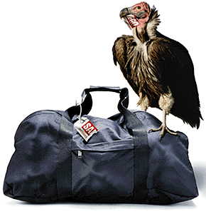

Contents | Features | Reviews | News | Archives | Store |
 |
|
| Movie Credits | Buy It! |
8 Heads in a Duffel Bag
Review by Carrie Gorringe
|  | Written and Directed by Tom Schulman Starring Joe Pesci, Andy Comeau, |
8 Heads in a Duffel Bag takes its audience back to the world of dese, dose and dem, but with a twist on the old theme of taking someone for a ride. The "someones", in this case, happen to be the decapitated heads of eight mobsters who, shall we say, did not live down to the mob’s expectations of them. Their freshly-disconnected remains are prepped for delivery to the story’s Mr. Big. Mr. Big has been waiting for this grisly tribute to arrive for over two weeks, and his patience is getting a touch thin. The designated bag-man has only forty-eight hours to make his delivery, or he, too, will be bagged.
However adept the courier, mobster Tommy Spinelli (Pesci), is at evading electronic surveillance at the airport, he is unable to overcome the kindness of strangers and the intractability of airline bureaucracy. The carry-on bag in which the heads are resting will not go in peace to their final destination; among other problems, it is too large for the overhead bin, so it is unceremoniously consigned to the cargo hold. To keep things interesting, the bag is an exact replica of the one belonging to Spinelli’s seatmate, Charlie (Comeau), an earnest but naïve medical student, on route to meet his would-be fiancée, Laurie (Swanson) and her family, consisting of a control-freak father (Hamilton) and a dipso mother (Cannon) on her nth time through rehab. Naturally, the wrong bag accompanies Charlie to his Mexican vacation, and a desperate Spinelli goes to Charlie’s college to "extract" a little information from Charlie’s dorm mates, Ernie (Spade) and Steve (Louiso). Meanwhile, the vacation plans go up in the air as Charlie and co. try to figure out just what to do about and with their additional passengers, who grow riper with every passing day.
8 Heads is an extremely broad farce. Cinematically speaking, it has much in common with the work of Jerry Lewis. It’s a world in which the characters are increasingly beset by more and more improbable plot twists until the idea of plausibility threatens to come completely undone. The tortures inflicted upon the characters, however, are nothing compared to those suffered by the audience, as its members wait almost interminably for the punch line while the tension builds. This style of comedy, the most crude in actual execution, is probably among the most difficult to construct, for the writer has to skillfully bundle several gags from seemingly disparate locations, build the tension, and keep the audience engaged in the process without introducing so many elements and prolonging the tension so long that the audience becomes confused, annoyed and/or bored. Schulman’s previous comedy, What About Bob?, in which Richard Dreyfuss is tormented endlessly by the self-absorbed neuroses of Bill Murray’s character, is very much part of the same tradition. Said comedic style is also an acquired taste; you either enjoy it or you become annoyed much sooner than anyone intended. 8 Heads differs from its predecessor only in the application of an impasto of black humor, already a growing trend in this year’s films (included under that category are the just-released Grosse Pointe Blank and the unspeakably dreadful Keys to Tulsa, as well as the forthcoming Australian film, Children of the Revolution). When black humor is mixed with farce, the usual result is an upping of the ante in terms of what the audience must endure. A careless admixture of the two can have the ironic and unintended effect of making the comedy unendurable. There are moments in 8 Heads when this very situation occurs, and a ninety-minute film soon begins to feel as if it is twice its length. The sequences at the hotel and those in which our man from the mob is shaking down Charlie’s two unfortunate friends could have used a generous application of the "delete" key at the shooting-script stage; the activity slows down so much that you could almost see the vultures circling over the screening room, and not because of the malodorous nature of the bag’s contents. Although Schulman is savvy enough to eventually get the film and the characters back on the road where they belong, and where greater opportunities for comedy exist, you can be forgiven for wondering whether or not Schulman had planned the narrative structure with sufficient care.
As characters in a farce, the actors must be judged by how well they react to emerging circumstances more than from any amount of psychological motivation. After years of training at the Martin Scorsese Academy for the Creation and Depiction of Loud and Psychopathic Mobsters (and receiving an Oscar in the process for playing another Tommy (De Vito, in Goodfellas), Pesci could basically recreate this persona in his sleep, and, for most of the film, that’s exactly what he does. It’s as if Casino’s Ricky Santoro was captured by aliens in reel eight, only to rematerialize directly into a comedy. The effect on screen is somewhat jarring, because the character’s rigid hostility is often out of sync with the loosely manic atmosphere around him. How jarring Pesci’s presence is can easily be illustrated by comparing a similar situation in one of 8 Head’s contemporaries, Grosse Pointe Blank. In Grosse Pointe Blank, John Cusack deals effectively with the dilemma of making a hit-man funny by cloaking him in an ironic awareness of his surroundings, thus softening any potentially rough edges. Pesci’s character has no irony to speak of , a situation that often leaves him drained of humor, and, as his situation is the critical center of the piece, the film seems to lack a source of motivation at critical moments (this is not to belittle Pesci’s acting ability; anyone who has seen Pesci’s work in the second and third Lethal Weapon movies knows that the actor is more than capable of rising to the manic occasion when called upon to do so). The script lets the character down. Part of the problem stems from what might be described as the film’s Scorsese fixation. Apart from the shared first name between the characters in 8 Heads and Goodfellas, and the literal transposition of characterization discussed above, the audience is treated to yet another (only semi-amusing) variation on the "you-talkin’-to-me" speech from Taxi Driver. On some level, it appears that Schulman wants 8 Heads to be a satire of Scorsese’s work. Instead, Schulman just shoots himself in the foot through a lack of directorial control, and Pesci gets hit by the ricochet. To be fair, there are some inspired gags in this film, but, lamentably, far too few for a film that falls under the category of comedy.
The real reason to see 8 Heads is supplied by the rest of the cast, all of whom give excellent performances because they aren’t hemmed in by any prior expectations on the part of the script. Hamilton and Cannon enrich every scene they are in, as they rip into their roles and devour them with gusto. Swanson displays a surprisingly mature comedic ability. Newcomers Louiso and Comeau do likewise as their characters move through the madness around them. But David Spade is the individual who comes closest to hitting the mark.. Stripped of the asinine accompaniment of Chris Farley, Spade’s trademark low-key, smarmy sarcasm quietly but gradually grows into a force that strengthens the film’s final scenes. Despite all of these pluses, let’s have a moment of silence, please, for the talent wasted herein.
Contents | Features | Reviews | News | Archives | Store
Copyright © 1999 by Nitrate Productions, Inc. All Rights Reserved.